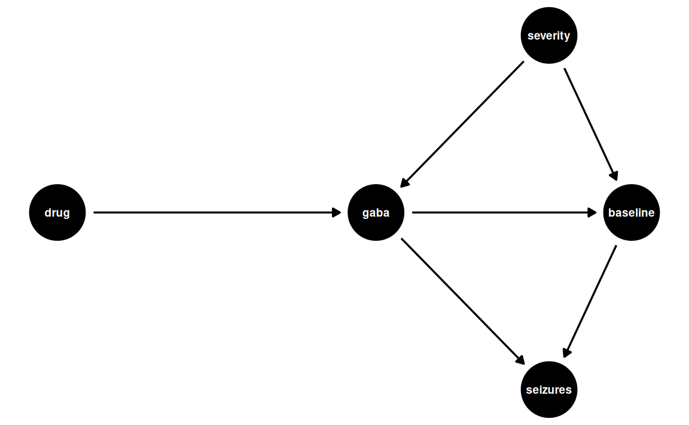
14 A Poissonous counting trick
Warning
🚧 This section is being actively worked on. 🚧
“Choose to be optimistic, it feels better.” — Dalai Lama
“Choose to model positive outcomes, it feels better for count outcomes.” — Daniel Skak Mazhari-Jensen
14.1 Pree-class Literature
- Todays dataset (Epilepsy Clinical Trial)
- Compendium
- Chapter 4.6 (pages 164—-171) in Introduction to statistical learning with R 2nd edition (click “Download ISL with R”)
15 Slides
NoteTeacher note
The slides contain speaking notes that you can view by pressing ‘S’ on the keyboard.
16 Case session 12: “Why are seizure data always right-skewed?”
At PhaRmacy Inc., excitement is growing over a new anti-seizure medication, progabide. A randomized clinical trial has just finished, and the lead investigator walks into the weekly research meeting with a smile and says:
“The treatment group had fewer seizures.”
Everyone celebrates but one brave person leans forward and asks:
“Fewer… according to what model?”
The lead investigator acknowledges the questions and provides the available data.
Looking at the raw data raises more questions than answers. The outcome is the number of seizures each patient experienced during the study. Some patients had only a handful of seizures, while others had dozens, and a few appear very different from the rest. The distribution is highly skewed and doesn’t resemble the continuous, normally distributed outcomes you’re used to analyzing. At the same time, the outcome is clearly not binary, so a logistic regression model would not be appropriate either.
As a member of the clinical development team, you have been asked to review the trial results before they are presented to management. Your role is to work with the biostatistics group to ensure that the data are analyzed using an appropriate model and that the conclusions about progabide’s effectiveness are scientifically sound.
At the upcoming project meeting, you’ll need to explain why some familiar regression models are not suitable for these data, recommend a more appropriate approach, and interpret what the analysis tells the team about the effect of progabide after accounting for patients’ baseline seizure frequency.
16.1 Data Example
Before doing anything with statistics and code, we should try imagining how the data was generated.
16.1.1 Exercise: Discuss the causal mechanisms of progabide
Discuss how progabide might work and how baseline seizure frequency might tie into this. You may look at the wikipidia page for progabide, but don’t overcomplicate your model.
Click for a potential solution
While baseline is not a coufounding, we’ll condition on it anyway to:
- increases precision (reduces residual variance)
- account for chance imbalance at baseline (since this is a small sample size)
- improve power
This is called precision adjustment or covariate adjustment, not confounding adjustment.
16.1.2 Exploring the data for familiarization
Let’s explore the dataset a bit — but before we do, I’ll do some tidying of the dataset using dplyr for wrangling. I’m not gonna explain this bit, as you can go back to session 8 by Rasmus for working with dplyr for wrangling.
data(epil)
epil <- epil |>
rename(
seizure_count = y,
drug = trt,
baseline_seizures = base,
trial_end = V4,
log_base = lbase,
log_age = lage
) |>
#filter(period < 2 | period > 3) |>
filter(period > 3) |>
mutate(
seizure_count = as.integer(seizure_count),
period = factor(period,
levels = c(4),
labels = c("week_8")
)
)And let’s looks at what we have:
epil |>
tibble::as_tibble()# A tibble: 59 × 9
seizure_count drug baseline_seizures age trial_end subject period
<int> <fct> <int> <int> <int> <int> <fct>
1 3 place… 11 31 1 1 week_8
2 3 place… 11 30 1 2 week_8
3 5 place… 6 25 1 3 week_8
4 4 place… 8 36 1 4 week_8
5 21 place… 66 22 1 5 week_8
6 7 place… 27 29 1 6 week_8
7 2 place… 12 31 1 7 week_8
8 12 place… 52 42 1 8 week_8
9 5 place… 23 37 1 9 week_8
10 0 place… 10 28 1 10 week_8
# ℹ 49 more rows
# ℹ 2 more variables: log_base <dbl>, log_age <dbl>epil |>
count(drug)# A tibble: 2 × 2
drug n
<fct> <int>
1 placebo 28
2 progabide 31So 59 patients in total with pretty balanced groups.
Now, let’s look at a histogram of the baseline_seizures and seizure_count:
seizure_lims <- range(c(epil$baseline_seizures, epil$seizure_count))
baseline_data_plot <- epil |>
ggplot() +
geom_histogram(
aes(x=baseline_seizures),
bins=30
) +
coord_cartesian(xlim = seizure_lims)
posttrial_data_plot <- epil |>
ggplot() +
geom_histogram(
aes(x=seizure_count),
bins=30
) +
coord_cartesian(xlim = seizure_lims)
baseline_data_plot + posttrial_data_plot
By looking at the data, it’s deficult to really see whether the average seizure_count decreases, but some of the extreme cases do seem to shrink.
We should also consider the relationship between baseline_seizures and seizure_count:
epil |>
ggplot(aes(baseline_seizures,seizure_count,color=drug)) +
geom_point(alpha=0.6) +
geom_smooth(
method="loess",
se=FALSE,
formula = y ~ x) +
theme_bw()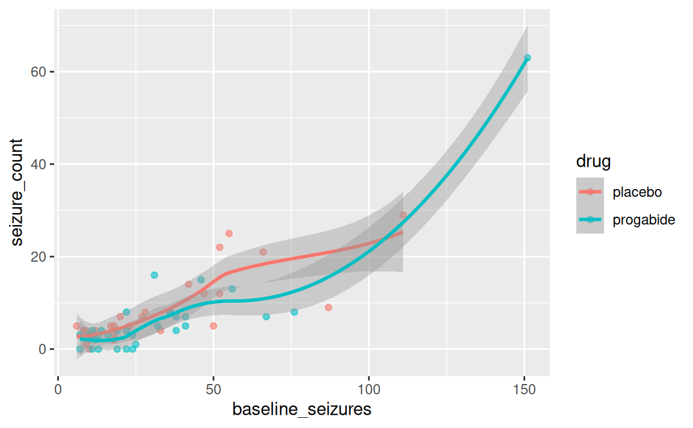
It definitely looks like there’s an association between baseline_seizures and seizure_count, so in accordance with our medical scientific model, we better include this in the statistical model to account for the variance.
Recall the case:
We want to know the difference in probability (i.e., incidence rate) of getting seizures.
16.2 Can we use Logistic regression?
This is a ultra quick recap of logistic regression. See session 10 on logistic regression by Carsten for a comprehensive recap.
Logistic regression uses the binomial distribution:
\[ outcome \sim Binomial(N,p) \] where N is the trial count and p is the probability, which we are interested in estimating with out model.
- We use the binomial distribution with logit link to model the outcome as the probability of event A.
- These are discrete counts, but we are interested in the overall probability of getting outcome A.
- Only two outcomes: 0 or 1 (heads or tails, dead or alive, left or right)
- The logit link transform our outcome variable to a linear space called log-odds that goes from \(-\infty\) to \(\infty\).
- The logistic function transforms our data back to the outcome space (probabilities that goes from 0—1).
16.3 Reading Task: When the odds are low, go Poisson!
As the case states, we did not manipulate how many seizures the patients were able to get in the trial period. While we could assume that the baseline was the maximum, it would completely break the logistic regression if we got more seizures after — a < 100% probability 😅
While the binomail distribution is great when N is known (trial count), there exists studies where you don’t know the upper limit (counting fish, selling a product, etc.) — what is the upper bound of fish in a lake we haven’t fully accounted for?
If we don’t know N, we cannot use the binomial!
Luckily, there’s a trick for this. When N becomes huge and p becomes really small, the binomial distribution takes a special shape — the Poisson distribution.
Explained mathematically:
The expected value of a binomial distribution is just Np (probability scale), and its variance \(Np(1-p)\). But when N is very large and p is very small, the variance and expected value is the same.
E.g., you have 1 in 1000 probability of getting a price.
As a result, the distribution only has one parameter, λ (pronounced lambda).
\[ y_i \sim Poisson(λ) \]
This solves several issues:
- We can now model counts and probabilities (actually, rates, but more on this later) without being in control of the experiment and knowing the finite trial count
- We can model events with extremely low probability in counts per sample instead of probability per trial
- We only need one parameter for both the mean and the variance, effectively saving a degree of freedom.
But how can we do this in practice?
16.3.1 Which link?
As a link function, we often use log.
\[ y_i \sim Poisson(λ_i) \\ log(λ_i) = α + β(x_i - \bar{x}) \] Why log?
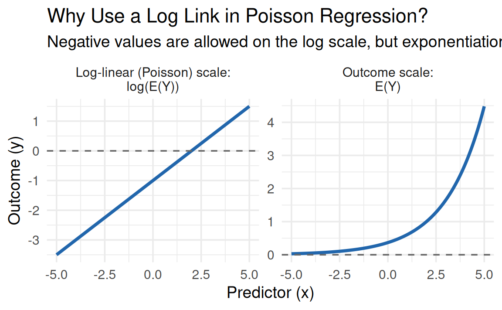
Note that the log-link has the same flaws and benefits from the binomial distribution.
Pros:
- ensures positive values (for prediction)
Cons:
- implies exponential relationship with predictors
- Grow very rapidly — therefore, very sensitive to range
- it cannot keep being exponential!
16.4 Discussion task: Gaussian vs Poisson for seizure counts:
So we can use the good-old Gaussian linear regression or this new thing: Poisson regression.
Discussion the following facts with your neighbor:
If we model the mean and variance of the seizure count, we would expect that taking the mean and variance of the dataset and feeding it into a distribution would closely resemble the data. Let’s try that with Gaussian distribution and a Poisson distribution:
mu <- mean(epil$seizure_count) # 7.305085
sigma <- sd(epil$seizure_count) # 9.649467
set.seed(363461174)
dist_draws <- data.frame(
gaussian = rnorm(1000,mu,sigma),
poisson = rpois(1000,mu)
) |>
tidyr::pivot_longer(
cols = c("gaussian","poisson"),
names_to = "dist",
values_to = "value"
)
dist_draws |>
ggplot() +
geom_histogram(
aes(x=value),
bins=30
) +
facet_wrap(~dist) +
labs(x="seizures")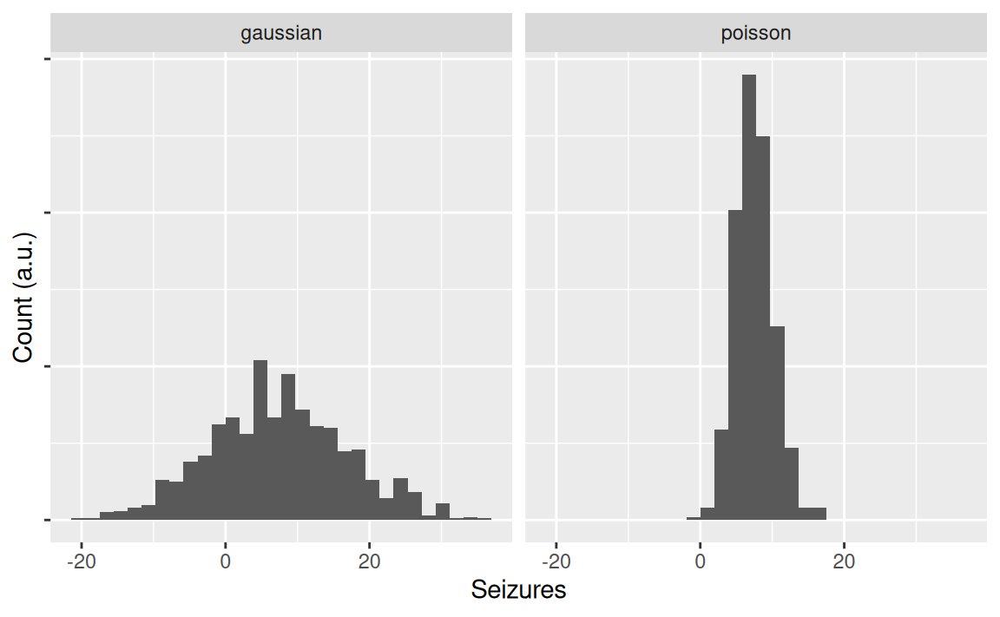
What do you notice? Compare the plots to the observed data we plotted just above.
- Which best captures the data?
- Which makes the worst fit?
- What else do you notice?
16.5 Proposing a model
First, we should propose a model. Looking at our causal medical model and the data-generating distributions, we’re going to go with the following formulation:
\[ seizure\_count_i \sim Poisson(λ_i) \\ log(λ_i) = α + β_1 baseline\_seizures + β_2 drug + β_3 baseline\_seizures*drug \\ \]
- The model says that we believe
seizure_countis Poisson distributed - We use a log link function
- We expect an intercept, α
- A covariate
baseline_seizures - An effect of
drug - An interaction between
baseline_seizuresandbaseline_seizures
16.6 Fitting a model
Let’s try fitting a simple model first: an intercept-only model.
Great! Now, let’s explore the content of it.
summary(m1_intercept)
Call:
glm(formula = seizure_count ~ drug, family = poisson(link = "log"),
data = epil)
Coefficients:
Estimate Std. Error z value Pr(>|z|)
(Intercept) 2.07497 0.06696 30.986 <2e-16 ***
drugprogabide -0.17142 0.09640 -1.778 0.0754 .
---
Signif. codes: 0 '***' 0.001 '**' 0.01 '*' 0.05 '.' 0.1 ' ' 1
(Dispersion parameter for poisson family taken to be 1)
Null deviance: 476.25 on 58 degrees of freedom
Residual deviance: 473.08 on 57 degrees of freedom
AIC: 664.85
Number of Fisher Scoring iterations: 6Yeah, we did it! But… What does the coefficients actually mean? Did we come any closer to answering our medical question: did the drug reduce epilepsy?
16.7 GLMs are notoriously difficult to interpret
Let’s have a look at the coefficients:
coef(m1_intercept) (Intercept) drugprogabide
2.0749673 -0.1714164 What does it mean?
Unless you’re a chatbot, I’m not sure you can’t read anything major from these coefficients. It’s because they’re still in log-link space!
So what do we do? Feed them to the chat model?
Similar to the logistic regression, we have to apply the opposite transformation we did in the first place to make the model linear. In statistical terminology, the function that can transform the model pack to it’s outcome unit is called the inverse link function. And the “opposite” mathematical operation to log is exponentiation.
Let’s convert them back from log-ratios to a incidence rate-ratio. We do this by exponentiating the value:
\[ e^{cefficients} \]
broom::tidy(m1_intercept,
exponentiate = TRUE,
conf.int = TRUE)# A tibble: 2 × 7
term estimate std.error statistic p.value conf.low conf.high
<chr> <dbl> <dbl> <dbl> <dbl> <dbl> <dbl>
1 (Intercept) 7.96 0.0670 31.0 8.36e-211 6.96 9.06
2 drugprogabi… 0.842 0.0964 -1.78 7.54e- 2 0.697 1.02That’s more like it!
The intercept reads 7.9642857, which is the expected seizure_count for the placebo group (and the average as we would expect!) Confirm this for yourself using the following code: mean(subset(epil,drug=="placebo")$seizure_count).
Next, it’s the β1drug 0.8424707, which is the expected rate ratio in seizure_count when being on progabide for 8 weeks, compared to placebo. Since the incidence rate-ratio less than 1, the expected seizure count is lower.
In fact, 15.8% lower on average. To confirm this for yourself, run the following code: mean(subset(epil,drug=="progabide")$seizure_count) and see the average count for the treatment group. Finally, prove to yourself that this is what the two coefficients mean in relation to each other by this code: exp(m1_intercept$coefficients[2])*mean(subset(epil,drug=="placebo")$seizure_count). So the average effect of being on progabide for 8 weeks was a reduction of 1.2546083 seizures during 8 weeks in this small sample.
16.8 Reading task: Reporting incidence rate ratio or counts
Should we report the incidence rate ratio or the counts for each group?
What would you prefer and why?
From an absolute perspective, the musquito is the most dangerous animal in the world! It causes most deaths a year. However, if I were to battle a musquito or a shark, I would bet my life on the musquito and not the shark! It is relatively much more dangerous! However, conditional on being in the real-life situation of facing a musquito or a shark, the former is much more probable.
Now, consider the interpretation of the coefficients and model we just made in Section 16.7. How would you inform a patient or a clinican about the results?
Click for a tip
Tip: consider conditioning on baseline_seizures.
Is 15.8% lower the same when you have 1 seizure every 8 weeks? What about 100? Would it be a meaningful unit to make national policies?
Now, what if we take the average absolute change: 1.2546083 when you have 1 seizure every 8 weeks? What about 100? Would it be a meaningful unit to make national policies?.
16.9 Fitting a multiple Poisson regression
While the model we’ve been using so far is not wrong, per se, it’s also rather simple. Until now, we have estimated the average change in seizure count, not taking into account how many seizures patients had before taking the drug.
Adding the baseline covariate will increase the precision of the model and provide better predictions for different patients, depending on their disease severity.
So we want to condition on baseline_seizures. Let’s to that:
# A tibble: 4 × 7
term estimate std.error statistic p.value conf.low conf.high
<chr> <dbl> <dbl> <dbl> <dbl> <dbl> <dbl>
1 (Intercept) 3.47 0.118 10.6 3.39e-26 2.74 4.35
2 drugprogabide 0.695 0.162 -2.24 2.53e- 2 0.505 0.956
3 baseline_sei… 1.02 0.00191 10.9 7.78e-28 1.02 1.02
4 drugprogabid… 1.00 0.00228 0.374 7.08e- 1 0.996 1.01 let’s compare the models:
coef_df <- bind_rows(
tidy(m1_intercept, conf.int = TRUE, exponentiate = TRUE) |> mutate(model = "Model 1 - intercept"),
tidy(m2_baseline, conf.int = TRUE, exponentiate = TRUE) |> mutate(model = "Model 2 - baseline")
)
ggplot(coef_df, aes(x = estimate, y = model)) +
geom_vline(xintercept = 1, linetype = "dashed", colour = "grey50") +
geom_point(size = 2) +
geom_errorbar(
aes(xmin = conf.low, xmax = conf.high),
width = 0.2
) +
facet_wrap(~term, scales = "free_x") +
labs(
x = "Coefficient estimate (95% CI)",
y = NULL
) +
theme_minimal()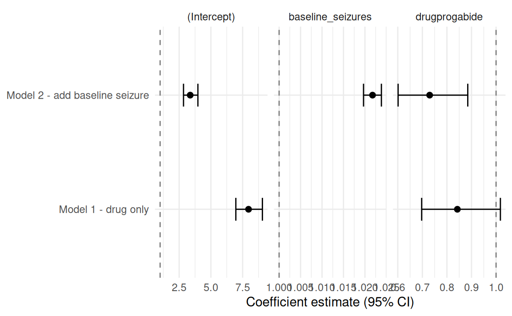
The intercept model does not provide a statistically significant average effect of progabide. However, the new model adjusting for baseline_seizures does.
But how do we interpret this model?
16.10 Marginal effects and counterfactuals:
16.10.1 Discussion: How each model represent the data:
The two models have very different ways of estimating the expected seizure_count. Explain to your neighbour the model does it using these plots:
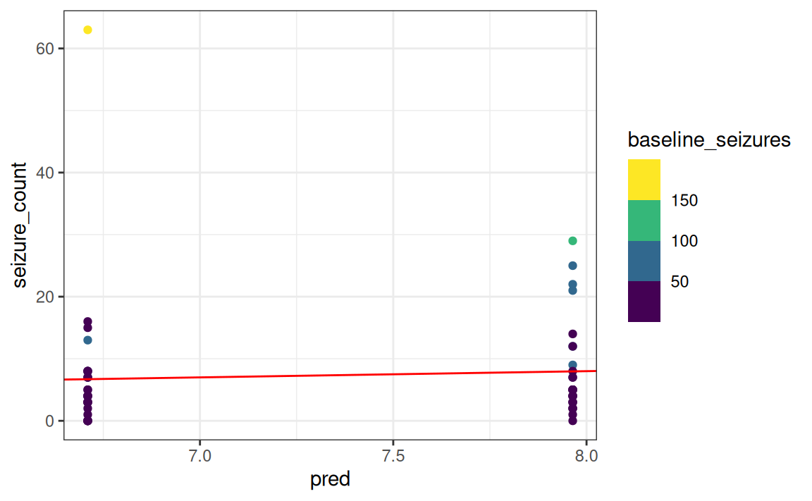
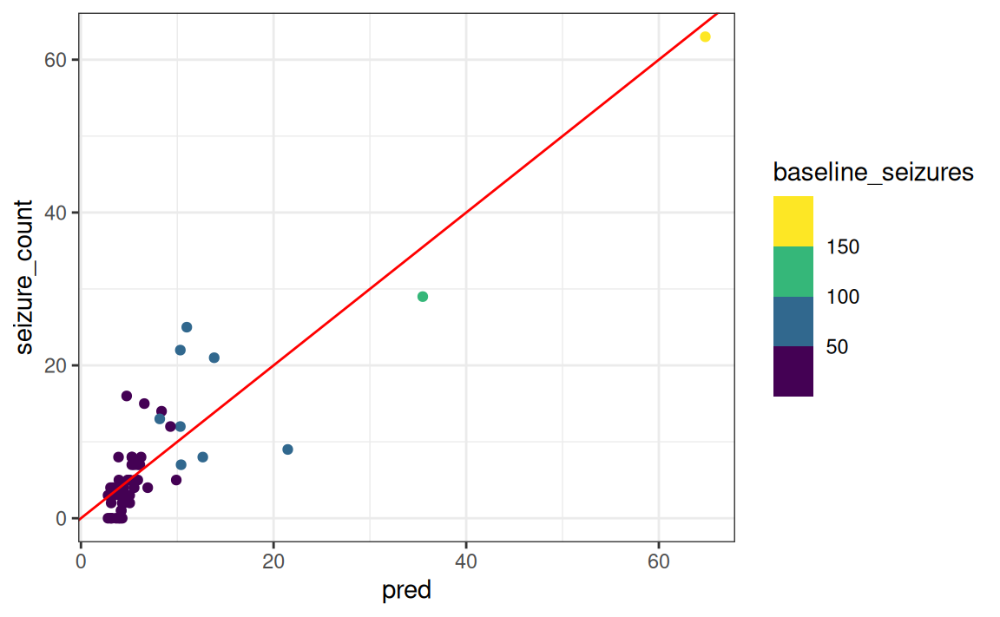
Model expectations
16.10.2 Making sense of Poisson coefficients
The easies way to understand the model coefficients is to make marginal plots. We’ll use the {marginaleffects} package for this.
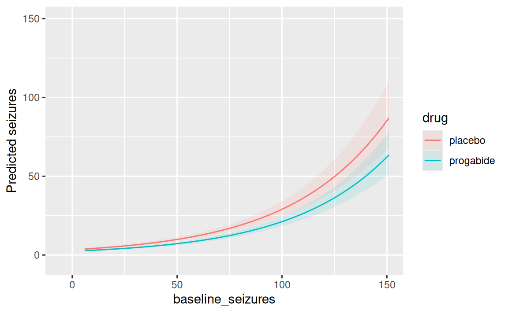
This is more like it! Now, we can appreciate how the model expects the average effect of seizure_count as a function of baseline_seizures and whether the patient took progabide for 8 weeks.
16.10.3 Extra madness - counterfactuals for clinical inference
This is an extra part (not curriculum material).
Suppose you wanted to know a cutoff for when the drug prevents at least three seizures:
grid <- datagrid(
model=m2_baseline,
baseline_seizures = seq(0, 100, by = 1),
age = mean(epil$age), #28 yo
#V4 = 1, # follow-up
drug = c("placebo", "progabide")
)
pred <- marginaleffects::predictions(m2_baseline, newdata = grid)
cutoff <- pred |>
dplyr::select(baseline_seizures, drug, estimate) |>
tidyr::pivot_wider(
names_from = drug,
values_from = estimate) |>
mutate(
reduction = placebo - progabide
)
cutoff_pt <- cutoff |>
slice_min(abs(reduction - (3)), n = 1)
worsening <- cutoff |>
slice_min(abs(reduction - (0)), n = 1)
ggplot(cutoff,
aes(baseline_seizures, reduction)) +
geom_line(linewidth = 1) +
geom_hline(yintercept = 3,
linetype = 2,
colour = "red") +
labs(
x = "Baseline seizures",
y = "Expected reduction",
title = "Expected treatment benefit"
) +
theme_bw() +
geom_label(
data = cutoff_pt,
aes(
label = paste0(
"Baseline = ", baseline_seizures,
"\nReduction = ", round(reduction, 2))
),
nudge_y = -1.5
) +
geom_point(aes(baseline_seizures,reduction),
cutoff_pt,
colour = "steelblue",
size = 3)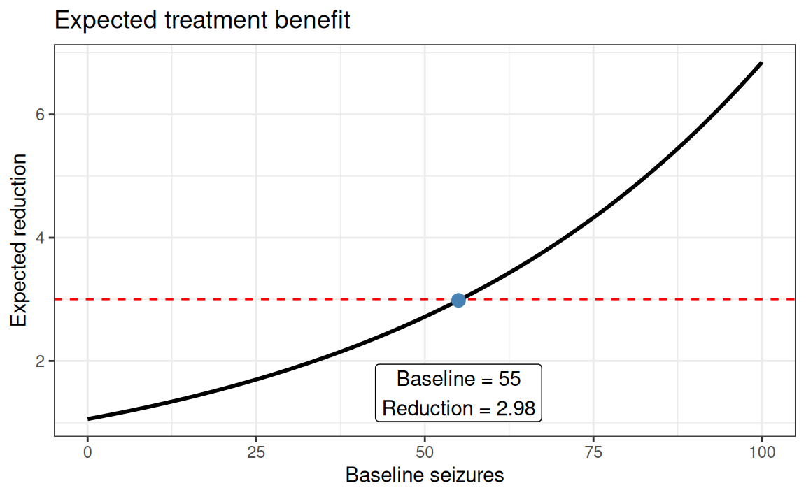
Ask the teacher if you’re curious…
16.11 Telling your model that people respond differently
What a cool model we have! But wait… Did we check for any assumptions yet? And what are the assumptions specific to Poisson regression?
16.11.1 The theory
Our Poisson model assumes that the number of seizures follows a Poisson distribution,
\[ Y_i \sim \text{Poisson}(\mu_i), \]
where the expected seizure count is modeled using a log link,
\[ \log(\mu_i) = \beta_0 + \beta_1\text{drug}_i + \beta_2\text{baseline}_i + \beta_3(\text{drug}_i \times \text{baseline}_i). \]
A key assumption of the Poisson distribution is that the mean and variance are equal,
\[ \mathbb{E}[Y_i] = \mathrm{Var}(Y_i) = \mu_i. \]
In medical data, this assumption is often unrealistic. Some patients are inherently more prone to seizures than others because of unmeasured factors such as disease severity, genetics, medication adherence, or other clinical characteristics. Consequently, the observed variability is often much larger than the Poisson model expects. This phenomenon is termed overdispersion.
The DAG (from the beginning of the session) illustrates one possible explanation for this extra variability. Patients differ in their underlying disease severity, which influences both baseline seizure counts and GABA activity. Although treatment affects GABA, there may still be patient-to-patient differences that are not fully captured by the measured baseline seizure count. These unobserved differences create rate heterogeneity — each patient has their own underlying seizure rate rather than sharing one common rate.
Rather than assuming a single Poisson rate for every individual, the negative binomial model assumes that each patient has their own Poisson rate,
\[ Y_i \mid \lambda_i \sim \text{Poisson}(\lambda_i), \]
where these individual rates themselves follow a Gamma distribution,
\[ \lambda_i \sim \text{Gamma}(\alpha,\beta). \]
Integrating over this distribution of rates produces the negative binomial distribution. For this reason, the model is often called the gamma-Poisson model.
This idea is similar to the Student’s \(t\) distribution. A Gaussian distribution assumes one common variance, whereas the Student’s \(t\) can be viewed as a mixture of Gaussian distributions with different variances. Likewise, the negative binomial is a mixture of Poisson distributions with different event rates.
The consequence is that the variance is no longer constrained to equal the mean. Instead,
\[ \mathrm{Var}(Y_i) = \mu_i + \frac{\mu_i^2}{\theta}, \]
where \(\theta\) is the dispersion parameter estimated from the data.
As \(\theta \rightarrow \infty\),
\[ \mathrm{Var}(Y_i) \rightarrow \mu_i, \]
so the negative binomial model reduces to the ordinary Poisson model.
16.11.2 The practice
Before fitting a negative binomial model, it is useful to check whether the Poisson assumptions appear reasonable. The performance::check_overdispersion() function compares the observed variability with the variability expected under the fitted Poisson model. Evidence of substantial overdispersion suggests that the Poisson model is likely underestimating uncertainty.
The performance::check_model() function provides additional diagnostic plots for evaluating the adequacy of the fitted model. If overdispersion is present, we can fit a negative binomial model using MASS::glm.nb(). The interpretation of the regression coefficients remains unchanged: exponentiating a coefficient gives the multiplicative change in the expected seizure rate, just as in the Poisson model. The only difference is that the negative binomial model explicitly allows for unexplained patient-to-patient variability.
performance::check_overdispersion(m2_baseline)# Overdispersion test
dispersion ratio = 2.582
Pearson's Chi-Squared = 141.992
p-value = < 0.001Overdispersion detected.performance::check_model(m2_baseline)
m3_nb <- MASS::glm.nb(seizure_count ~ drug * baseline_seizures,
data = epil
)
performance::check_model(m3_nb)To illustrate the difference between these distributions, the figure below simulates data using the observed mean and standard deviation of the epilepsy data. The Gaussian distribution allows impossible negative seizure counts, while the Poisson distribution is restricted to non-negative integers but produces too little variability because its variance equals its mean. The negative binomial distribution remains discrete and non-negative while accommodating the larger variance observed in the data, making it a much more realistic model for seizure counts.
mu <- mean(epil$seizure_count) # 7.305085
sigma <- sd(epil$seizure_count) # 9.649467
set.seed(363461174)
dist_draws <- data.frame(
gaussian = rnorm(1000,mu,sigma),
poisson = rpois(1000,mu),
negbin = rnbinom(1000, mu = mu, size = mu^2 / (sigma^2 - mu)) # Variance = mu + mu^2/size - solve for size!
) |>
tidyr::pivot_longer(
cols = c("gaussian","poisson","negbin"),
names_to = "dist",
values_to = "value" )
dist_draws |> ggplot() +
geom_histogram(
aes(x=value), bins=30
) +
facet_wrap(~dist) +
labs(x="seizures")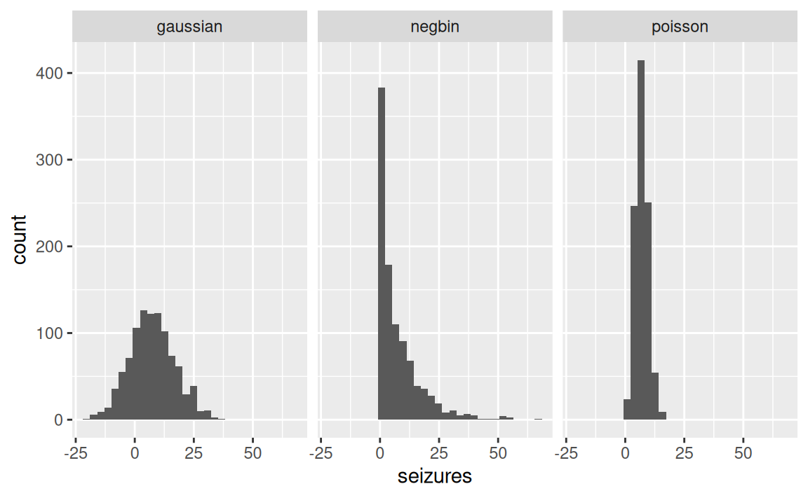
This time, what do you notice? Compare the plots to the observed data we plotted juin the beginning of the session.
- Which best captures the data?
- Which makes the worst fit?
- What else do you notice?
16.12 Fair game - normalizing the exposure time
The parameter λ is commonly interpreted as a rate.
The rate interpretation is nice for allowing varying expoure time.
Implizitly, λ is equal to an expected number of events, μ, per unit time or distance, τ. This implies that \(λ = μ/τ\), which lets us redefine the link:
\[ y_i \sim Poisson(λ_i) \\ log λ_i = log \frac{μ_i}{τ_i} = α + βx_i \]
Since the logarithm of a ratio is the same as the difference of logarithms:
\[ log λ_i = log μ_i - log τ_i = α + βx_i \]
These τ are the “exposures”. If different observations i have different exposures, the expected value on row i is given by
\[ log μ_i = log τ_i + α + βx_i \]
When \(τ_i = 1\), then \(logτ_i = 0\) and we’re back to standard Poisson!
But when the exposure is not 1, τ does effectively scales the expected number of events for each case i in the unit \(x = 1\) (1 day, year, whatever…). Therefore, we write:
\[ y_i \sim Poisson(μ_i) \\ log μ_i = log τ_i + α + βx_i \]
Where τ is a column in the data. It’s just like adding a predictor (taking its log) without adding a parameter for it!
If you put a parameter in front of τ, you’re able to model the hypothesis that the rate is not constant with time.
Remember: When the length of observations, area of sampling, or intensity of sampling varies, the counts we observe also naturally vary! Poisson assumes stationarity (time/space) — here, we add an offset! That is — the logarithm of the exposure unit.
16.12.1 Simulating an example:
Consider the case of reporting events (e.g., death) at two hospitals. Hospital 1 records daily events (30 observations of one day each), while Hospital 2 records weekly events (4 observations, each representing seven days).
If we simply modeled the raw event counts, Hospital 2 would naturally tend to have larger counts because each observation covers a longer period of time.
set.seed(636961739)
num_days <- 30 # days of the experiment
hospital1 <- rpois (num_days, 1.5) # 1.5 events per day
num_weeks <- 4 # weeks of the experiment
hospital2 <- rpois(num_weeks, 0.5*7) # events * lowst unit (i.e., days)
events <- c(hospital1, hospital2)
exposure <- c(rep(1,30), rep(7,4))
hospital_id <- c(rep(0,30), rep(1,4))
hospital_data <- data.frame(
events=events,
days=exposure,
hospital_id=hospital_id
)
hospital_data$log_days = log(hospital_data$days)
sim_m1 <- glm( events ~ 1 + hospital_id,
family = poisson,
data = hospital_data
)
broom::tidy(sim_m1,exponentiate = TRUE)# A tibble: 2 × 5
term estimate std.error statistic p.value
<chr> <dbl> <dbl> <dbl> <dbl>
1 (Intercept) 1.73 0.139 3.97 0.0000730
2 hospital_id 2.16 0.293 2.63 0.00846 # A tibble: 2 × 5
term estimate std.error statistic p.value
<chr> <dbl> <dbl> <dbl> <dbl>
1 (Intercept) 1.73 0.139 3.97 0.0000730
2 hospital_id 0.309 0.293 -4.01 0.000061716.12.1.1 Expectations:
In this simulation, Hospital 1 was generated with an average rate of 1.5 events per day, while Hospital 2 was generated with an average rate of 0.5 events per day. Therefore, we expect a correct fitted model to recover:
An intercept corresponding to approximately 1.5 events per day
-
An exponentiated coefficient for hospital_id of approximately
\[ \frac{0.50}{1.5}≈0.33. \]
This means Hospital 2 has about one-third the event rate of Hospital 1 (equivalently, about a 67% lower event rate). Since we are fitting a Poisson model, this exponentiated coefficient is interpreted as an incidence rate ratio (IRR). Note: Small differences between the estimated and true values are expected because the data are randomly simulated.
16.12.1.2 Observations:
Notice that when we simply model the raw event counts, Hospital 2 will naturally have larger counts because each observation covers a longer period of time. This is in contrast to our expectation.
The offset corrects for this by incorporating the amount of exposure into the model. Specifically, we include the logarithm of the exposure log_days as an offset:
\[ log μ_i = log (days_i) + α + β1hospital_i \] Because the offset has a coefficient fixed at 1, the model estimates event rates (events per day) rather than raw counts. This allows observations with different exposure times to be compared on the same scale. The estimates are much closer to our expectation this time.
17 Summary:
This session introduced the Poisson distribution and how to use it in regression (within the GLM framework). We covered it’s relationship to logistic regression and why it’s necessary in favor of the gaussian linear regression. We also covered how the coefficients are interpreted (incidence rate-ratio), and how we invert the coefficients (taking it’s exponential). Finally, we covered the assumptions (dispersion) and how to adjust different exposure times (including an offset).
Hidden material on prediction
manual predictions:
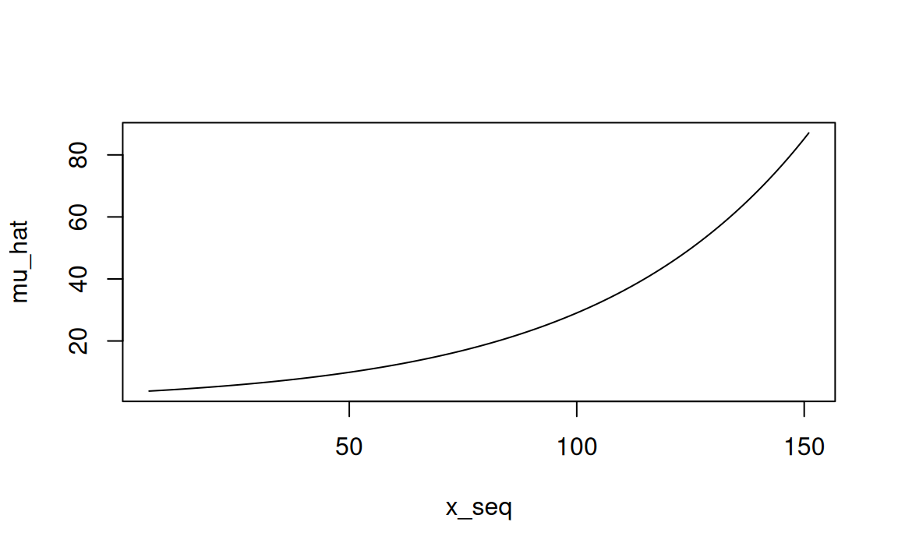
# placebo
newdata <- data.frame(
baseline_seizures = x_seq,
drug = "placebo"
)
newdata$mu_hat <- predict(
m2_baseline,
newdata = newdata,
type = "response"
)
# progabide
newdata2 <- data.frame(
baseline_seizures = x_seq,
drug = "progabide"
)
predict(m2_baseline, newdata2, type = "response") 1 2 3 4 5 6 7
2.752356 2.841604 2.933746 3.028876 3.127091 3.228490 3.333178
8 9 10 11 12 13 14
3.441260 3.552846 3.668051 3.786992 3.909789 4.036569 4.167459
15 16 17 18 19 20 21
4.302593 4.442110 4.586150 4.734861 4.888394 5.046906 5.210557
22 23 24 25 26 27 28
5.379515 5.553952 5.734045 5.919978 6.111940 6.310126 6.514739
29 30 31 32 33 34 35
6.725987 6.944084 7.169254 7.401725 7.641734 7.889526 8.145352
36 37 38 39 40 41 42
8.409474 8.682161 8.963690 9.254347 9.554430 9.864243 10.184102
43 44 45 46 47 48 49
10.514333 10.855271 11.207266 11.570674 11.945866 12.333223 12.733142
50 51 52 53 54 55 56
13.146028 13.572303 14.012400 14.466767 14.935868 15.420180 15.920197
57 58 59 60 61 62 63
16.436427 16.969396 17.519648 18.087742 18.674257 19.279790 19.904959
64 65 66 67 68 69 70
20.550399 21.216769 21.904746 22.615031 23.348349 24.105445 24.887091
71 72 73 74 75 76 77
25.694082 26.527241 27.387417 28.275484 29.192348 30.138942 31.116231
78 79 80 81 82 83 84
32.125209 33.166904 34.242378 35.352725 36.499077 37.682600 38.904500
85 86 87 88 89 90 91
40.166021 41.468449 42.813109 44.201372 45.634650 47.114404 48.642141
92 93 94 95 96 97 98
50.219417 51.847837 53.529060 55.264800 57.056822 58.906953 60.817076
99 100
62.789137 64.825144 mu_prog <- exp(
b["(Intercept)"] +
b["drugprogabide"] +
(b["baseline_seizures"] + b["drugprogabide:baseline_seizures"]) * x_seq
)
data.frame(x=x_seq,y=mu_prog) |>
ggplot(aes(x=x,y=y)) +
geom_line()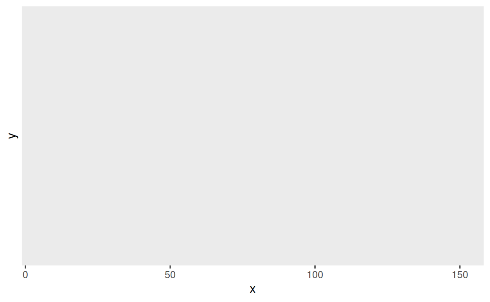
#X <- model.matrix(~ trt + base + `trtprogabide:base`, newdata)
#X <- model.matrix(~ trt * base, newdata)
tt <- delete.response(terms(m2_baseline))
X <- model.matrix(
tt,
newdata,
xlev = m2_baseline$xlevels
)
newdata$mu_hat <- exp(X %*% coef(m2_baseline))
exp(X %*% coef(m2_baseline)) == predict(
m2_baseline,
newdata = newdata,
type = "response"
) [,1]
1 TRUE
2 TRUE
3 TRUE
4 TRUE
5 TRUE
6 TRUE
7 TRUE
8 TRUE
9 TRUE
10 TRUE
11 TRUE
12 TRUE
13 TRUE
14 TRUE
15 TRUE
16 TRUE
17 TRUE
18 TRUE
19 TRUE
20 TRUE
21 TRUE
22 TRUE
23 TRUE
24 TRUE
25 TRUE
26 TRUE
27 TRUE
28 TRUE
29 TRUE
30 TRUE
31 TRUE
32 TRUE
33 TRUE
34 TRUE
35 TRUE
36 TRUE
37 TRUE
38 TRUE
39 TRUE
40 TRUE
41 TRUE
42 TRUE
43 TRUE
44 TRUE
45 TRUE
46 TRUE
47 TRUE
48 TRUE
49 TRUE
50 TRUE
51 TRUE
52 TRUE
53 TRUE
54 TRUE
55 TRUE
56 TRUE
57 TRUE
58 TRUE
59 TRUE
60 TRUE
61 TRUE
62 TRUE
63 TRUE
64 TRUE
65 TRUE
66 TRUE
67 TRUE
68 TRUE
69 TRUE
70 TRUE
71 TRUE
72 TRUE
73 TRUE
74 TRUE
75 TRUE
76 TRUE
77 TRUE
78 TRUE
79 TRUE
80 TRUE
81 TRUE
82 TRUE
83 TRUE
84 TRUE
85 TRUE
86 TRUE
87 TRUE
88 TRUE
89 TRUE
90 TRUE
91 TRUE
92 TRUE
93 TRUE
94 TRUE
95 TRUE
96 TRUE
97 TRUE
98 TRUE
99 TRUE
100 TRUEThis last expression,
exp(X %*% coef(fit))
is essentially what predict.glm(type = “response”) computes internally. It’s the most general way to think about GLM predictions: construct the design matrix X, multiply by the coefficient vector β to get the linear predictor η=Xβ, then apply the inverse link function. For a Poisson model with the log link, the inverse link is simply exp().
The predicted values in a generalized linear model are obtained using matrix multiplication of the design matrix and the estimated coefficient vector.
Let the design matrix be
\[ X = \begin{bmatrix} 1 & 0 & 6.0 & 0\\ 1 & 0 & 7.46 & 0\\ \vdots & \vdots & \vdots & \vdots\\ 1 & 0 & 151 & 0 \end{bmatrix}, \]
and let the estimated regression coefficients be
\[ \hat{\beta} = \begin{bmatrix} 1.29584\\ -0.24923\\ 0.02145\\ 0.00042 \end{bmatrix}. \]
The linear predictor is obtained by matrix multiplication:
\[ \eta = X\hat{\beta}. \]
In R, this is computed as
Here,
- \(X\) is a \(100 \times 4\) design matrix,
- \(\hat{\beta}\) is a \(4 \times 1\) coefficient vector,
- \(\eta\) is a \(100 \times 1\) vector of linear predictors.
For the first observation, the linear predictor is computed as the product of the first row of \(X\) and the coefficient vector:
\[ \eta_1 = \begin{bmatrix} 1 & 0 & 6 & 0 \end{bmatrix} \begin{bmatrix} 1.29584\\ -0.24923\\ 0.02145\\ 0.00042 \end{bmatrix} = 1(1.29584) +0(-0.24923) +6(0.02145) +0(0.00042) = 1.42453. \]
This row-by-column multiplication is an inner product, also called a dot product, between the first row of the design matrix and the coefficient vector.
Thus,
The overall computation, \[ \eta = X\hat{\beta}, \] is matrix multiplication.
Each individual fitted value, \[ \eta_i = x_i^\top \hat{\beta}, \] is an inner product (dot product).
Since this is a Poisson generalized linear model with a log link, the predicted mean response is obtained by applying the inverse link function:
\[ \hat{\mu} = \exp(\eta). \]
In R:
A cross product is not being computed here. In vector algebra, the cross product is defined only for three-dimensional vectors and produces another vector. Although R has a function named crossprod(), it computes
\[ X^\top Y, \]
which is a matrix product, not the geometric cross product.